Featured
A selection of photographs spanning street, landscape, and professional work. Click any image to view it full screen.
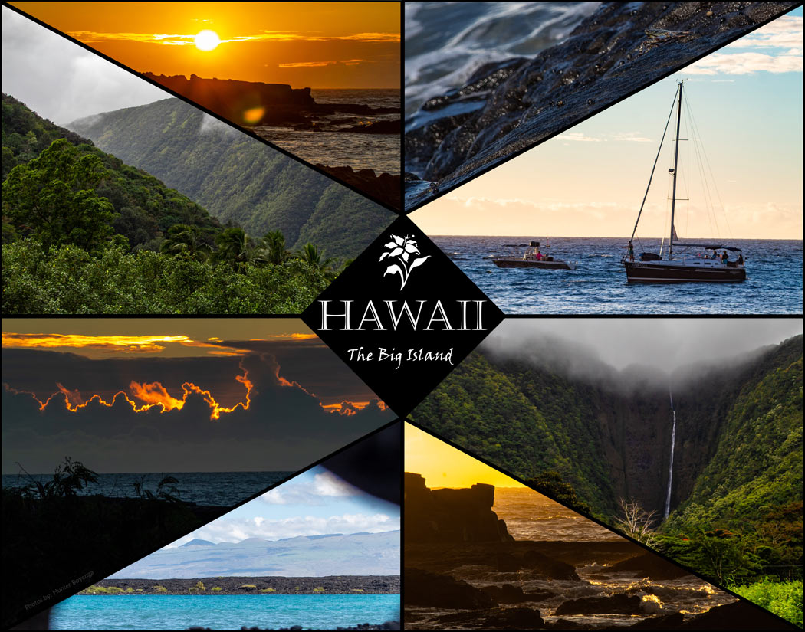
The Work
I have been shooting since 2018, building a foundation in both capture and post-processing across Photoshop and Lightroom. Over the years I have worked as a freelance photographer covering sporting events and corporate brand work — two disciplines that demand very different things from a photographer. Sports shooting sharpens your instincts: you learn to anticipate the moment before it happens and trust your settings under pressure. Corporate and brand work pushes the other direction, toward intentionality — controlled compositions, consistent lighting, and images that communicate something specific about an organization.
Photography takes an instant out of time, altering life by holding it still.
— Dorothea LangeMy style doesn't sit in one lane. Depending on the shoot, I might be chasing candid street moments, framing a wide landscape, or dialing in a portrait — and I find that switching between those modes keeps the eye sharp. All of my work is shot digitally, with post-processing in Lightroom for color and exposure and Photoshop for anything that needs more surgical attention. Most of these images were taken across California and beyond, locations collected over years of travel and day-to-day life. Photography has always run alongside my design work rather than separate from it; the ability to create original imagery from scratch makes every project feel more personal and more complete.
Gallery
16 photographs — click to enlarge.
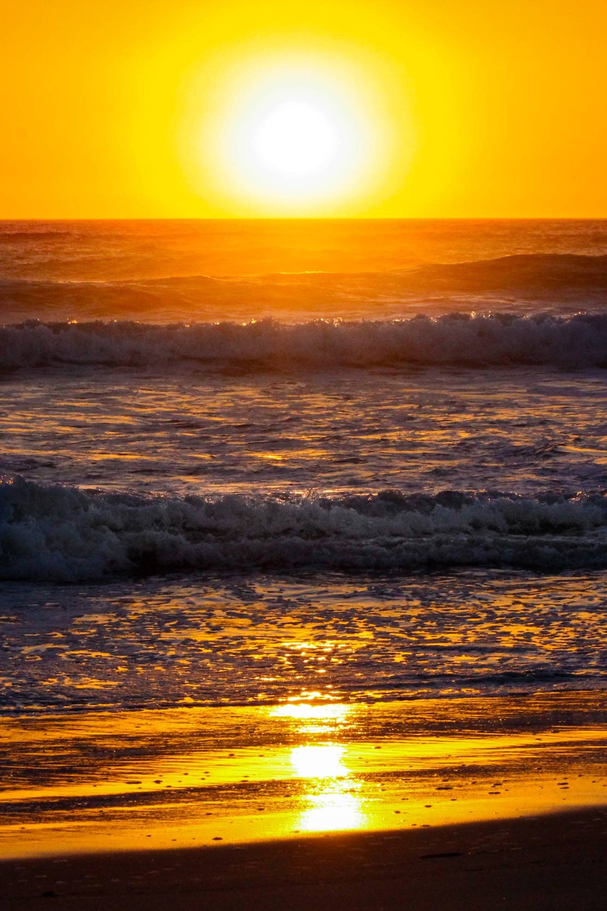
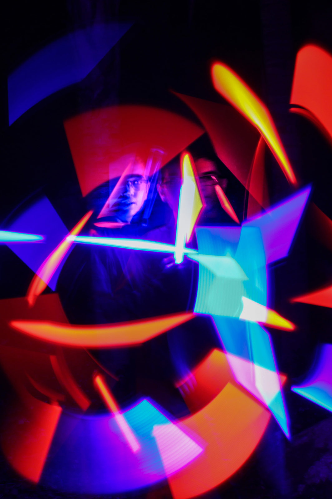
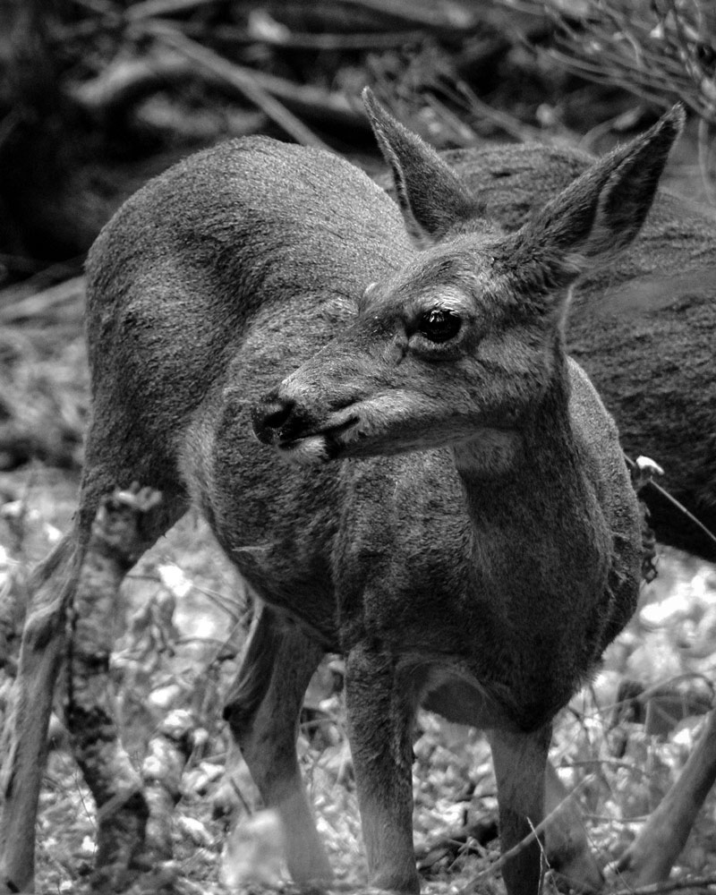
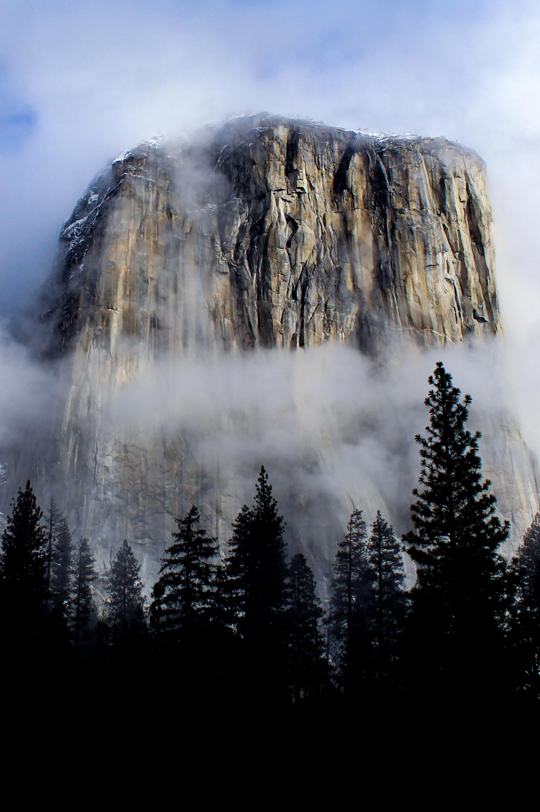
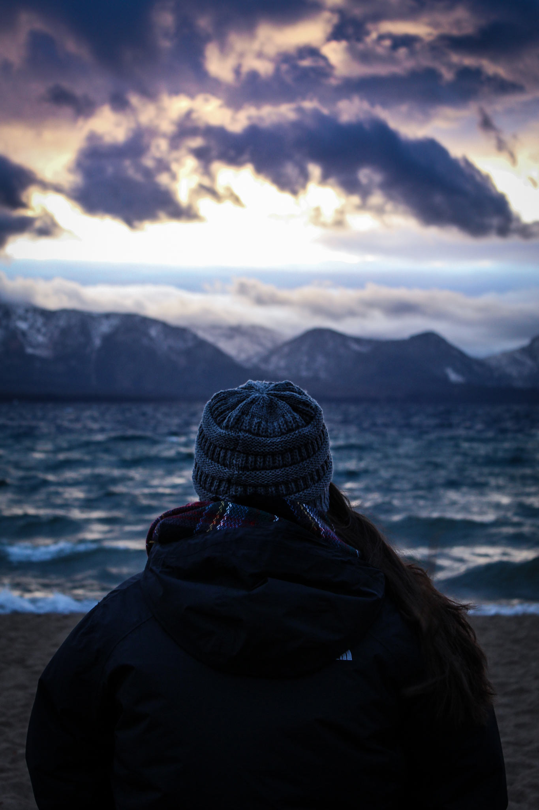
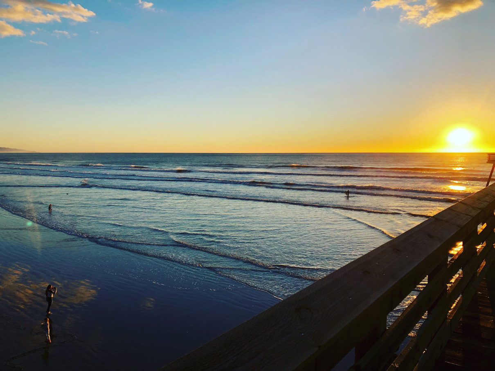
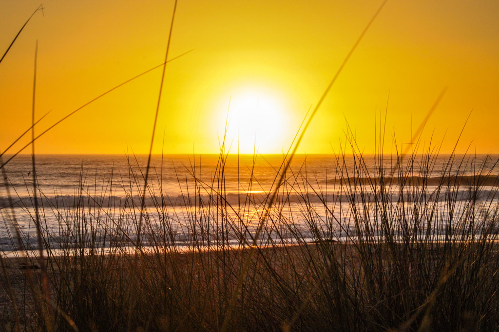
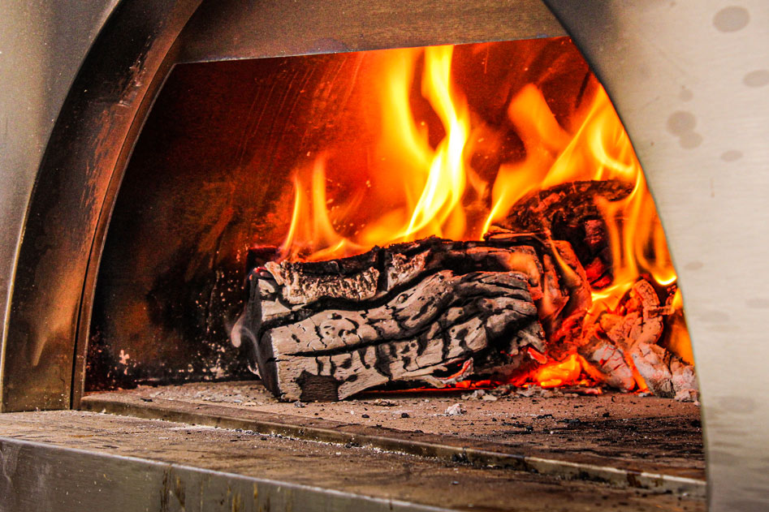
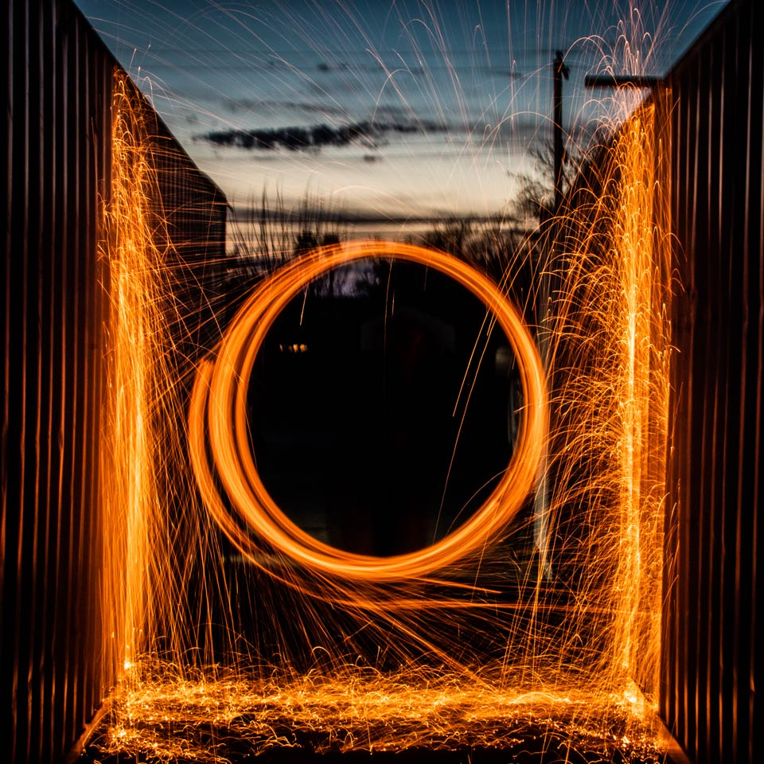
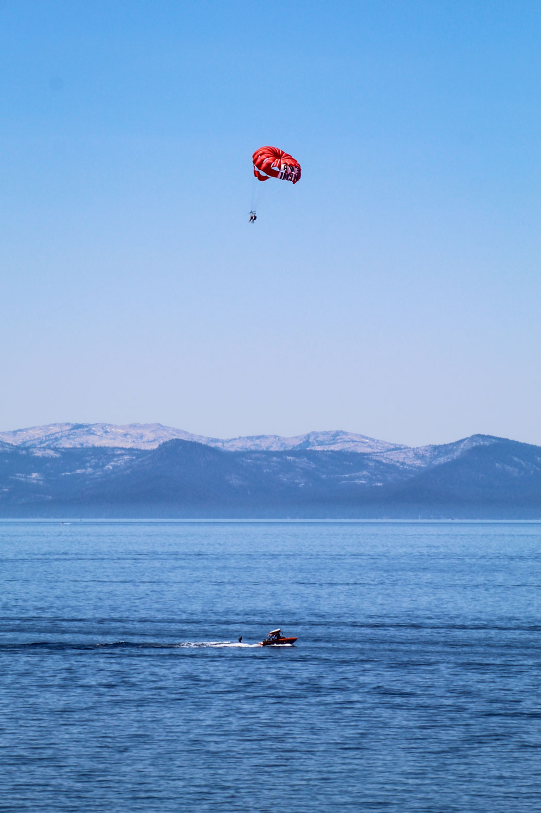
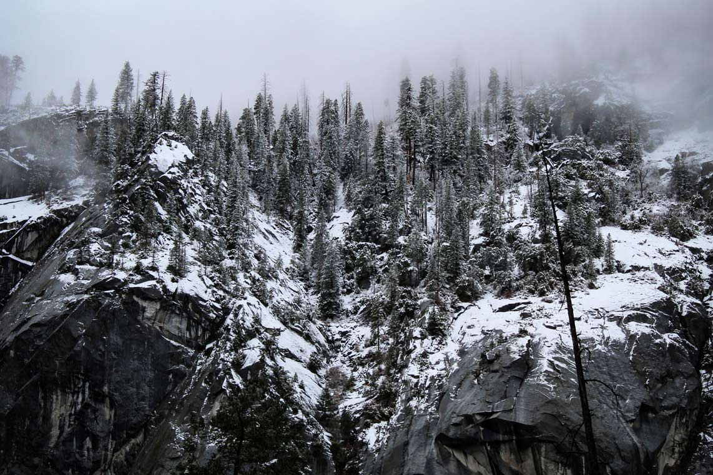
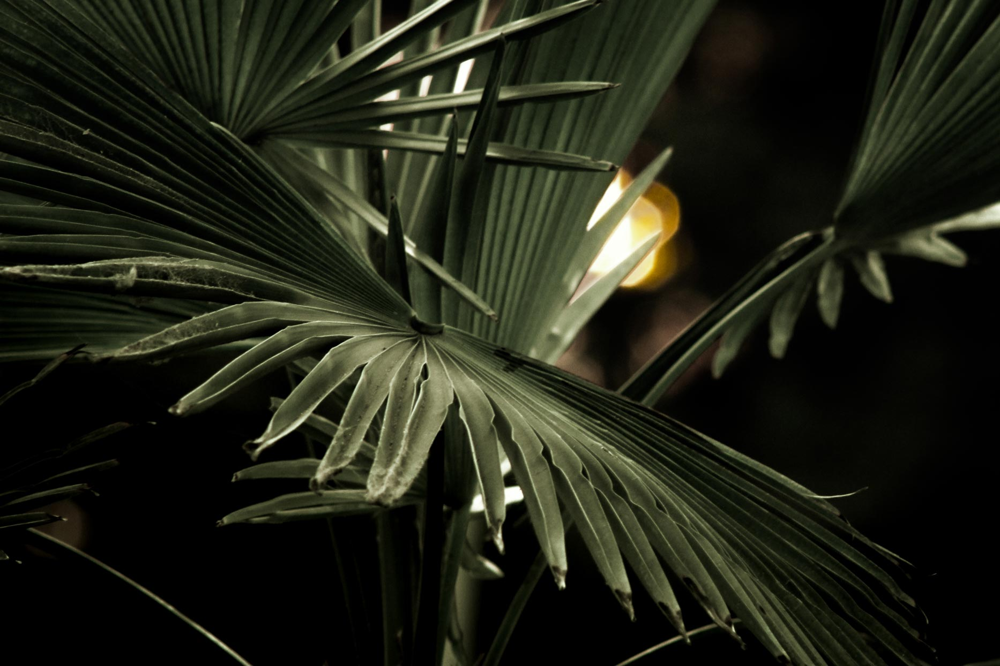
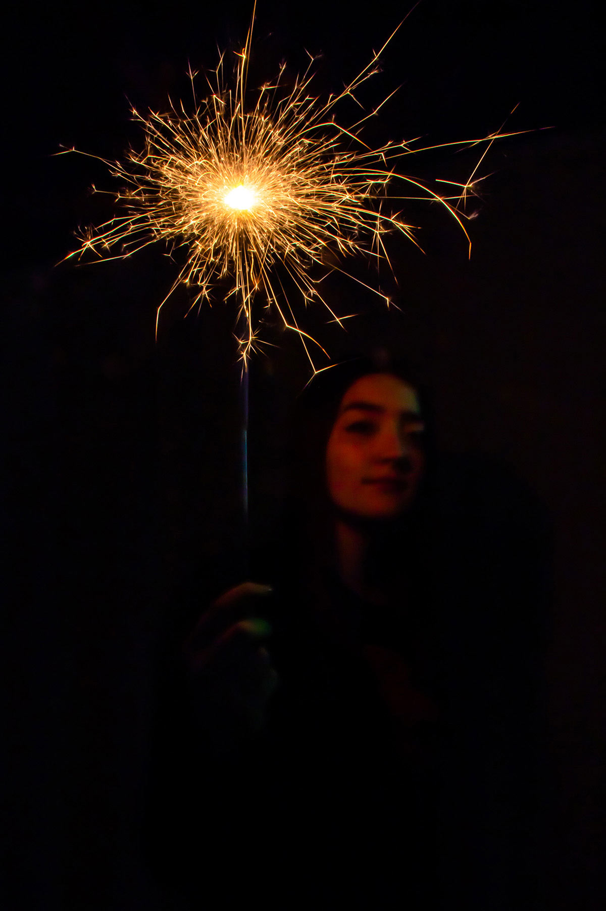
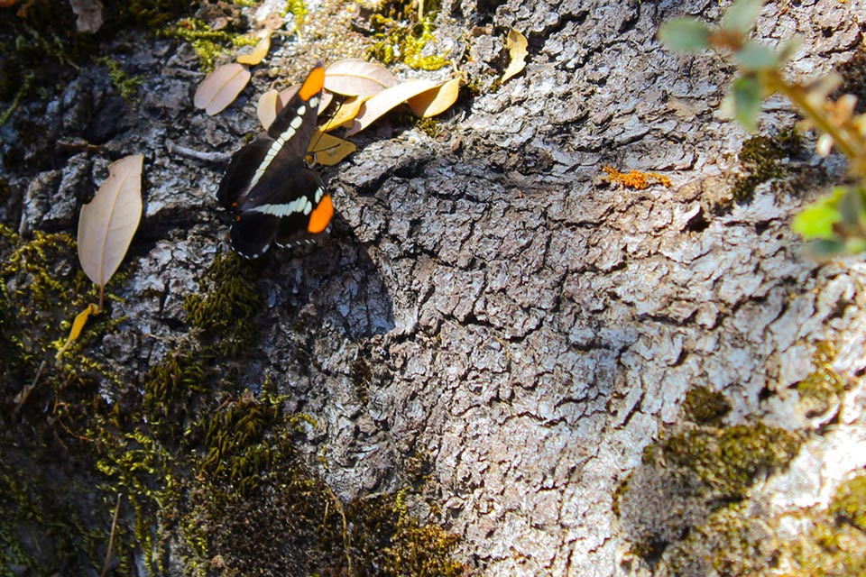
Technical Notes
All of my work is shot on a Canon DSLR, capturing RAW files to preserve as much latitude as possible in post. Every image is processed individually — no blanket presets — with Lightroom handling the initial pass for exposure, white balance, and color grading, and Photoshop brought in when a shot needs more precise retouching or compositing work. My editing philosophy leans clean and true to life: the goal is to produce an image that looks like the scene actually looked, just at its best. Shadows lifted enough to hold detail, highlights reined in where they need to be, and color that feels natural rather than pushed. The edit should be invisible.